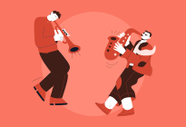

<ion-header class="ion-no-border">
  <ion-toolbar color="danger" no-border>

    <ion-title>
      <h3>Vibez4U</h3>
    </ion-title>

    <ion-buttons slot="end">
      <ion-button>
        
      </ion-button>
    </ion-buttons>

  </ion-toolbar>
</ion-header>

<ion-content [fullscreen]="true">

  <div class="banner">

    

    <div class="caption ion-padding">
      The Best <br>
      Booking App..!!
    </div>

    <!-- <div class="search">
      <ion-item lines="none" class="ion-no-padding">
        <ion-icon slot="start" name="search-outline"></ion-icon>
        <ion-input placeholder="Search events"></ion-input>
        <ion-button slot='end'>
          
        </ion-button>
      </ion-item>
    </div> -->

  </div>

  <div class="title">
    <h2>List of Rooms</h2>

    <p>See all</p>
  </div>

  <!-- <div class="event-slider">
    <ion-slides [options]="{ slidesPerView: 'auto', zoom: false, grabCursor: true }" class="default-left-padding"> -->

      <!-- <ion-slide>
        <ion-col class="ion-text-left">
          <ion-card>

            <ion-card-header class="ion-no-padding">
              
            </ion-card-header>

            <ion-card-content>
              <p class="date">17th July, 2021</p>
              <h2 class="eventname">International Jazz Festival</h2>
              <p class="location"><ion-icon name="location"></ion-icon>Caracas, Venezuela</p>

              <div class="additional-info">
                <div class="attendees">

                </div>

                <p class="time">10:00pm</p>
              </div>
            </ion-card-content>

          </ion-card>
        </ion-col>
      </ion-slide> -->

    <!-- </ion-slides>
  </div> -->


        <ion-card>
          
          <ion-card-header>
            <ion-card-subtitle>Destination</ion-card-subtitle>
            <ion-card-title>Madison, WI</ion-card-title>
          </ion-card-header>
          <ion-card-content>
            Founded in 1829 on an isthmus between Lake Monona and Lake Mendota, Madison was named the capital of the Wisconsin Territory in 1836.
          </ion-card-content>
        </ion-card>

</ion-content>

